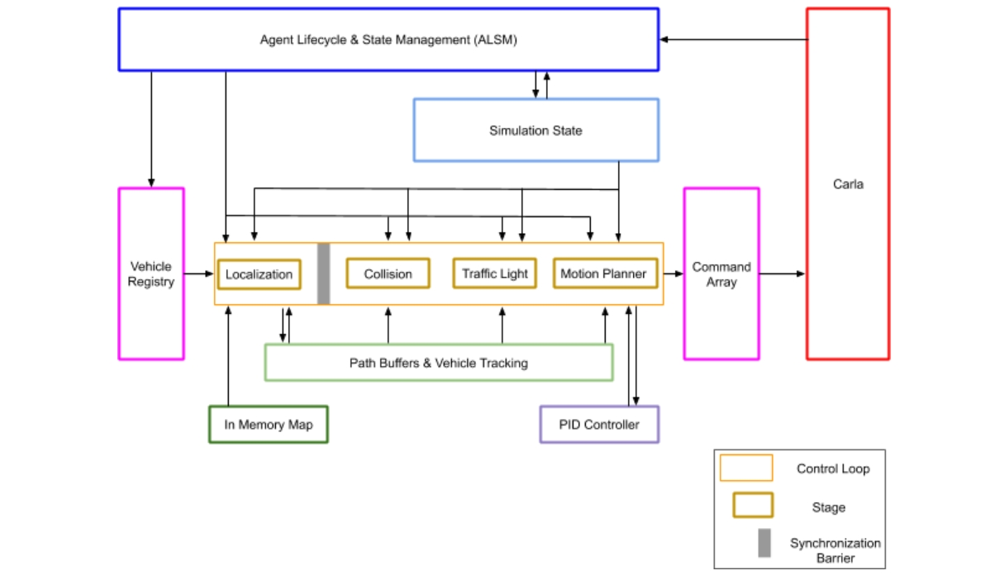

Traffic Manager
- What is the Traffic Manager?
- Architecture
- Using the Traffic Manager
- Deterministic mode
- Hybrid physics mode
- Running multiple Traffic Managers
- Synchronous mode
- Traffic manager in large maps
What is the Traffic Manager?
The Traffic Manager (TM) is the module that controls vehicles in autopilot mode in a simulation. Its goal is to populate a simulation with realistic urban traffic conditions. Users can customize some behaviors, for example, to set specific learning circumstances.
Structured design
TM is built on CARLA's client-side. The execution flow is divided into stages, each with independent operations and goals. This facilitates the development of phase-related functionalities and data structures while improving computational efficiency. Each stage runs on a different thread. Communication with other stages is managed through synchronous messaging. Information flows in one direction.
User customization
Users have some control over the traffic flow by setting parameters that allow, force, or encourage specific behaviors. Users can change the traffic behavior as they prefer, both online and offline. For example, cars can be allowed to ignore the speed limits or force a lane change. Being able to play around with behaviors is indispensable when trying to simulate reality. Driving systems need to be trained under specific and atypical circumstances.
Architecture
Overview

The above diagram is a representation of the internal architecture of the TM. The C++ code for each component can be found in LibCarla/source/carla/trafficmanager. Each component is explained in detail in the following sections. A simplified overview of the logic is as follows:
1. Store and update the current state of the simulation.
- The Agent Lifecycle & State Management (ALSM) scans the world to keep track of all the vehicles and walkers present and to clean up entries for those that no longer exist. All the data is retrieved from the server and is passed through several stages. The ALSM is the only component that makes calls to the server.
- The vehicle registry contains an array of vehicles on autopilot (controlled by the TM) and a list of pedestrians and vehicles not on autopilot (not controlled by the TM).
- The simulation state is a cache store of the position, velocity, and additional information of all the vehicles and pedestrians in the simulation.
2. Calculate the movement of every autopilot vehicle.
The TM generates viable commands for all vehicles in the vehicle registry according to the simulation state. Calculations for each vehicle are done separately. These calculations are divided into different stages. The control loop makes sure that all calculations are consistent by creating synchronization barriers between stages. No vehicle moves to the next stage before calculations are finished for all vehicles in the current stage. Each vehicle goes through the following stages:
2.1 - Localization Stage.
Paths are created dynamically using a list of nearby waypoints collected from the In-Memory Map, a simplification of the simulation map as a grid of waypoints. Directions at junctions are chosen randomly. Each vehicle's path is stored and maintained by the Path Buffers & Vehicle Tracking (PBVT) component for easy access and modification in future stages.
2.2 - Collision Stage.
Bounding boxes are extended over each vehicle's path to identify and navigate potential collision hazards.
2.3 - Traffic Light Stage.
Similar to the Collision Stage, potential hazards that affect each vehicle's path due to traffic light influence, stop signs, and junction priority are identified.
2.4 - Motion Planner Stage.
Vehicle movement is computed based on the defined path. A PID controller determines how to reach the target waypoints. This is then translated into a CARLA command for application in the next step.
2.5 - Vehicle Lights Stage.
The vehicle lights switch on/off dynamically based on environmental factors (e.g. sunlight and the presence of fog or rain) and vehicle behavior (e.g. turning on direction indicators if the vehicle will turn left/right at the next junction, or turn on the stop lights if braking).
3. Apply the commands in the simulation.
Commands generated in the previous step are collected into the command array and sent to the CARLA server in a batch to be applied in the same frame.
The following sections will explain each component and stage in the TM logic described above in more detail.
ALSM
ALSM stands for Agent Lifecycle and State Management. It is the first step in the TM logic cycle and provides context of the simulation's current state.
The ALSM component:
- Scans the world to keep track of all vehicles and pedestrians, their positions and velocities. If physics are enabled, the velocity is retrieved by Vehicle.get_velocity(). Otherwise, the velocity is calculated using the history of position updates over time.
- Stores the position, velocity, and additional information (traffic light influence, bounding boxes, etc) of every vehicle and pedestrian in the simulation state component.
- Updates the list of TM-controlled vehicles in the vehicle registry.
- Updates entries in the control loop and PBVT components to match the vehicle registry.
Related .cpp files: ALSM.h, ALSM.cpp.
Vehicle registry
The vehicle registry keeps track of all vehicles and pedestrians in the simulation.
The vehicle registry:
- Is passed an updated list of vehicles and pedestrians from the ALSM.
- Stores vehicles registered to the TM in a separate array for iteration during the control loop.
Related .cpp files: MotionPlannerStage.cpp.
Simulation state
The simulation state stores information about all vehicles in the simulation for easy access and modification in later stages.
The simulation state:
- Receives data from the ALSM including current actor position, velocity, traffic light influence, traffic light state, etc.
- Stores all information in cache, avoiding subsequent calls to the server during the control loop.
Related .cpp files: SimulationState.cpp, SimulationState.h.
Control loop
The control loop manages the calculations of the next command for all autopilot vehicles so they are performed synchronously. The control loop consists of five different stages; localization, collision, traffic light, motion planner and vehicle lights.
The control loop:
- Receives an array of TM-controlled vehicles from the vehicle registry.
- Performs calculations for each vehicle separately by looping over the array.
- Divides calculations into a series of stages.
- Creates synchronization barriers between stages to guarantee consistency. Calculations for all vehicles are finished before any of them move to the next stage, ensuring all vehicles are updated in the same frame.
- Coordinates the transition between stages so all calculations are done in sync.
- Sends the command array to the server when the last stages (Motion Planner Stage and Vehicle Lights Stage) finishes so there are no frame delays between the command calculations and the command application.
Related .cpp files: TrafficManagerLocal.cpp.
In-Memory Map
The In-Memory Map is a helper module contained within the PBVT and is used during the Localization Stage.
The In-Memory Map:
- Converts the map into a grid of discrete waypoints.
- Includes waypoints in a specific data structure with more information to connect waypoints and identify roads, junctions, etc.
- Identifies these structures with an ID used to locate vehicles in nearby areas quickly.
Related .cpp files: InMemoryMap.cpp and SimpleWaypoint.cpp.
PBVT
PBVT stands for Path Buffer and Vehicle Tracking. The PBVT is a data structure that contains the expected path for every vehicle and allows easy access to data during the control loop.
The PBVT:
- Contains a map of deque objects with one entry per vehicle.
- Contains a set of waypoints for each vehicle describing its current location and near-future path.
- Contains the In-Memory Map used by the Localization Stage to relate every vehicle to the nearest waypoint and possible overlapping paths.
PID controller
The PID controller is a helper module that performs calculations during the Motion Planner Stage.
The PID controller:
- Estimates the throttle, brake, and steering input needed to reach a target value using the information gathered by the Motion Planner Stage.
- Makes adjustments depending on the specific parameterization of the controller. Parameters can be modified if desired. Read more about PID controllers to learn how to make modifications.
Related .cpp files: PIDController.cpp.
Command Array
The Command Array represents the last step in the TM logic cycle. It receives commands for all the registered vehicles and applies them.
The Command Array:
- Receives a series of carla.VehicleControl's from the Motion Planner Stage.
- Batches all commands to be applied during the same frame.
- Sends the batch to the CARLA server calling either apply_batch() or apply_batch_synch() in carla.Client depending on whether the simulation is running in asynchronous or synchronous mode, respectively.
Related .cpp files: TrafficManagerLocal.cpp.
Stages of the Control Loop
Stage 1- Localization Stage
The Localization Stage defines a near-future path for vehicles controlled by the TM.
The Localization Stage:
- Obtains the position and velocity of all vehicles from the simulation state.
- Uses the In-Memory Map to relate every vehicle with a list of waypoints that describes its current location and near-future path according to its trajectory. The faster the vehicle goes, the longer the list will be.
- Updates the path according to planning decisions such as lane changes, speed limit, distance to leading vehicle parameterization, etc.
- Stores the path for all vehicles in the PBVT module.
- Compares paths with each other to estimate possible collision situations. Results are passed to the Collision Stage.
Related .cpp files: LocalizationStage.cpp and LocalizationUtils.cpp.
Stage 2- Collision Stage
The Collision Stage triggers collision hazards.
The Collision Stage:
- Receives from the Localization Stage a list of vehicle pairs whose paths could potentially overlap.
- Extends bounding boxes along the path ahead (geodesic boundaries) for each vehicle pair to check if they actually overlap and determine whether the risk of collision is real.
- Sends hazards for all possible collisions to the Motion Planner Stage to modify the path accordingly.
Related .cpp files: CollisionStage.cpp.
Stage 3- Traffic Light Stage
The Traffic Light stage triggers hazards due to traffic regulators such as traffic lights, stop signs, and priority at junctions.
The Traffic Light stage:
- Sets a traffic hazard if a vehicle is under the influence of a yellow or red traffic light or a stop sign.
- Extends a bounding box along a vehicle's path if it is in an unsignaled junction. Vehicles with overlapping paths follow a "First-In-First-Out" order to move. Wait times are set to a fixed value.
Related .cpp files: TrafficLightStage.cpp.
Stage 4- Motion Planner Stage
The Motion Planner Stage generates the CARLA commands to be applied to vehicles.
The Motion Planner Stage:
- Gathers a vehicle's position and velocity (simulation state), path (PBVT), and hazards (Collision Stage and Traffic Light Stage).
- Makes high-level decisions about how a vehicle should move, for example, computing the brake needed to prevent a collision hazard. A PID controller is used to estimate behaviors according to target values.
- Translates the desired movement to a carla.VehicleControl for application to the vehicle.
- Sends the resulting CARLA commands to the Command Array.
Related .cpp files: MotionPlannerStage.cpp.
Stage 5- Vehicle Lights Stage
The Vehicle Lights Stage activates the lights based on the condition of the vehicle and the surrounding environment.
The Vehicle Lights Stage:
-
Retrieves the planned waypoints for the vehicle, information about vehicle lights (eg. light state and the planned command to be applied) and the weather conditions.
-
Determines the new state of the vehicle lights:
- Turns on the blinkers if the vehicle is planning to turn left/right at the next junction.
- Turns on the stop lights if the applied command is asking the vehicle to brake.
- Turns on the low beams and the position lights from sunset to dawn, or under heavy rain.
- Turns on the fog lights under heavy fog conditions.
-
Update the vehicle lights state if it has changed.
Related .cpp files: VehicleLightStage.cpp.
Using the Traffic Manager
Vehicle behavior considerations
The TM implements general behavior patterns that must be taken into consideration when you set vehicles to autopilot:
- Vehicles are not goal-oriented, they follow a dynamically produced trajectory and choose a path randomly when approaching a junction. Their path is endless.
- Vehicles' target speed is 70% of their current speed limit unless any other value is set.
- Junction priority does not follow traffic regulations. The TM uses its own priority system at junctions. The resolution of this restriction is a work in progress. In the meantime, some issues may arise, for example, vehicles inside a roundabout yielding to a vehicle trying to get in.
TM behavior can be adjusted through the Python API. For specific methods, see the TM section of the Python API documentation. Below is a general summary of what is possible through the API:
| Topic | Description |
|---|---|
| General: | - Create a TM instance connected to a port. - Retrieve the port where a TM is connected. |
| Safety conditions: | - Set a minimum distance between stopped vehicles (for a single vehicle or for all vehicles). This will affect the minimum moving distance. - Set the desired speed as a percentage of the current speed limit (for a single vehicle or for all vehicles). - Reset traffic lights. |
| Collision managing: | - Enable/Disable collisions between a vehicle and a specific actor. - Make a vehicle ignore all other vehicles. - Make a vehicle ignore all walkers. - Make a vehicle ignore all traffic lights. |
| Lane changes: | - Force a lane change, ignoring possible collisions. - Enable/Disable lane changes for a vehicle. |
| Hybrid physics mode: | - Enable/Disable hybrid physics mode. - Change the radius in which physics is enabled. |
Creating a Traffic Manager
Note
TM is designed to work in synchronous mode. Using TM in asynchronous mode can lead to unexpected and undesirable results. Read more in the section Synchronous mode.
A TM instance is created by a carla.Client, passing the port to be used. The default port is 8000.
To create a TM instance:
tm = client.get_trafficmanager(port)
To enable autopilot for a set of vehicles, retrieve the port of the TM instance and set set_autopilot to True, passing the TM port at the same time. If no port is provided, it will try to connect to a TM in the default port (8000). If the TM does not exist, it will create one:
tm_port = tm.get_port()
for v in vehicles_list:
v.set_autopilot(True,tm_port)
Note
Creating or connecting to a TM in multi-client situations is different from the above example. Learn more in the section Running multiple Traffic Managers.
The generate_traffic.py script in /PythonAPI/examples provides an example of how to create a TM instance using a port passed as a script argument and register every vehicle spawned to it by setting the autopilot to True in a batch:
traffic_manager = client.get_trafficmanager(args.tm-port)
tm_port = traffic_manager.get_port()
...
batch.append(SpawnActor(blueprint, transform).then(SetAutopilot(FutureActor, True,tm_port)))
...
traffic_manager.global_percentage_speed_difference(30.0)
Configuring autopilot behavior
The following example creates a TM instance and configures dangerous behavior for a specific vehicle so it will ignore all traffic lights, leave no safety distance from other vehicles, and drive 20% faster than the current speed limit:
tm = client.get_trafficmanager(port)
tm_port = tm.get_port()
for v in my_vehicles:
v.set_autopilot(True,tm_port)
danger_car = my_vehicles[0]
tm.ignore_lights_percentage(danger_car,100)
tm.distance_to_leading_vehicle(danger_car,0)
tm.vehicle_percentage_speed_difference(danger_car,-20)
The example below sets the same list of vehicles to autopilot but instead configures them with moderate driving behavior. The vehicles drive 80% slower than the current speed limit, leaving at least 5 meters between themselves and other vehicles, and never perform lane changes:
tm = client.get_trafficmanager(port)
tm_port = tm.get_port()
for v in my_vehicles:
v.set_autopilot(True,tm_port)
danger_car = my_vehicles[0]
tm.global_distance_to_leading_vehicle(5)
tm.global_percentage_speed_difference(80)
for v in my_vehicles:
tm.auto_lane_change(v,False)
Delegating the Traffic Manager to automatically update vehicle lights
By default, vehicle lights (brake, turn indicators, etc...) of the vehicles managed by the TM are never updated. It is possible to delegate the TM to update the vehicle lights of a given vehicle actor:
tm = client.get_trafficmanager(port)
for actor in my_vehicles:
tm.update_vehicle_lights(actor, True)
Vehicle lights management has to be specified on a per-vehicle basis, and there could be at any given time both vehicles with and without the automatic light management.
Stopping a Traffic Manager
The TM is not an actor that needs to be destroyed; it will stop when the client that created it stops. This is automatically managed by the API, the user does not have to do anything. However, when shutting down a TM, the user must destroy the vehicles controlled by it, otherwise they will remain immobile on the map. The script generate_traffic.py does this automatically:
client.apply_batch([carla.command.DestroyActor(x) for x in vehicles_list])
Warning
Shutting down a TM-Server will shut down the TM-Clients connecting to it. To learn the difference between a TM-Server and a TM-Client, read about Running multiple Traffic Managers.
Deterministic mode
In deterministic mode, the TM will produce the same results and behaviors under the same conditions. Do not mistake determinism with the recorder. While the recorder allows you to store the log of a simulation to play it back, determinism ensures that the TM will always have the same output over different executions of a script as long as the same conditions are maintained.
Deterministic mode is available in synchronous mode only. In asynchronous mode, there is less control over the simulation and determinism cannot be achieved. Read more in the section "Synchronous mode" before starting.
To enable deterministic mode, use the following method:
my_tm.set_random_device_seed(seed_value)
seed_value is an int number from which random numbers will be generated. The value itself is not relevant, but the same value will always result in the same output. Two simulations, with the same conditions, that use the same seed value, will be deterministic.
To maintain determinism over multiple simulation runs, the seed must be set for every simulation. For example, each time the world is reloaded, the seed must be set again:
client.reload_world()
my_tm.set_random_device_seed(seed_value)
Deterministic mode can be tested in the generate_traffic.py example script by passing a seed value as an argument. The following example populates a map with 50 autopilot actors in synchronous mode and sets the seed to an arbitrary value of 9:
cd PythonAPI/examples
python3 generate_traffic.py -n 50 --seed 9
Warning
The CARLA server and the TM must be in synchronous mode before enabling deterministic mode. Read more here about synchronous mode in TM.
Hybrid physics mode
Hybrid mode allows users to disable most physics calculations for all autopilot vehicles, or for autopilot vehicles outside of a certain radius of a vehicle tagged with hero. This removes the vehicle physics bottleneck from a simulation. Vehicles whose physics are disabled will move by teleportation. Basic calculations for linear acceleration are maintained to ensure position updates and vehicle speed remain realistic and the toggling of physics calculations on vehicles is fluid.
Hybrid mode uses the Actor.set_simulate_physics() method to toggle physics calculations. It is disabled by default. There are two options to enable it:
TrafficManager.set_hybrid_physics_mode(True)— This method enables hybrid mode for the TM object calling it.- Running
generate_traffic.pywith the flag--hybrid— This example script creates a TM and spawns vehicles in autopilot. It then sets these vehicles to hybrid mode when the--hybridflag is passed as a script argument.
To modify the behavior of hybrid mode, use the following two parameters:
- Radius (default = 50 meters) — The radius is relative to vehicles tagged with
hero. All vehicles inside this radius will have physics enabled; vehicles outside of the radius will have physics disabled. The size of the radius is modified usingtraffic_manager.set_hybrid_physics_radius(r). - Hero vehicle — A vehicle tagged with
role_name='hero'that acts as the center of the radius.- If there is no hero vehicle, all vehicles' physics will be disabled.
- If there is more than one hero vehicle, the radius will be considered for them all, creating different areas of influence with physics enabled.
The clip below shows how physics is enabled and disabled when hybrid mode is active. The hero vehicle is tagged with a red square. Vehicles with physics disabled are tagged with a blue square. When inside the hero vehicle's radius of influence, physics are enabled and the tag becomes green.

Running multiple Traffic Managers
Traffic Manager servers and clients
A CARLA client creates a TM by specifying to the server which port to use. If a port is not specified, the default 8000 will be used. If further TMs are created on the same port, they will become TM-Clients and the original TM will become a TM-Server. These titles define how a TM behaves within a simulation.
TM-Server
A TM-Server is created if it was the first TM to connect to a free port and then other TMs (TM-Clients) connected to the same port it was running on. The TM-Server will dictate the behavior of all the TM-Clients, e.g., if the TM-Server is stopped, all TM-Clients will stop.
The following code creates two TM-Servers. Each one connects to a different, unused port:
tm01 = client01.get_trafficmanager() # tm01 --> tm01 (p=8000)
tm02 = client02.get_trafficmanager(5000) # tm02(p=5000) --> tm02 (p=5000)
TM-Client
A TM-Client is created when a TM connects to a port occupied by another TM (TM-Server). The TM-Client behavior will be dictated by the TM-Server.
The following code creates two TM-Clients, each one connecting with the TM-Servers created in the section above.
tm03 = client03.get_trafficmanager() # tm03 --> tm01 (p=8000).
tm04 = client04.get_trafficmanager(5000) # tm04(p=5000) --> tm02 (p=5000)
The CARLA server keeps a register of all TM instances by storing the port and the client IP (hidden to the user) that link to them. There is currently no way to check the TM instances that have been created so far. A connection will always be attempted when trying to create an instance and it will either create a new TM-Server or a TM-Client.
Multi-client simulations
In a multi-client simulation, multiple TMs are created on the same port. The first TM will be a TM-Server and the rest will be TM-Clients connecting to it. The TM-Server will dictate the behavior of all the TM instances:
terminal 1: ./CarlaUE4.sh -carla-rpc-port=4000
terminal 2: python3 generate_traffic.py --port 4000 --tm-port 4050 # TM-Server
terminal 3: python3 generate_traffic.py --port 4000 --tm-port 4050 # TM-Client
Multi-TM simulations
In a multi-TM simulation, multiple TM instances are created on distinct ports. Each TM instance will control its own behavior:
terminal 1: ./CarlaUE4.sh -carla-rpc-port=4000
terminal 2: python3 generate_traffic.py --port 4000 --tm-port 4050 # TM-Server A
terminal 3: python3 generate_traffic.py --port 4000 --tm-port 4550 # TM-Server B
Multi-simulation
Multi-simulation is when more than one CARLA server is running at the same time. The TM needs to connect to the relevant CARLA server port. As long as the computational power allows for it, the TM can run multiple simulations at a time without any problems:
terminal 1: ./CarlaUE4.sh -carla-rpc-port=4000 # simulation A
terminal 2: ./CarlaUE4.sh -carla-rpc-port=5000 # simulation B
terminal 3: python3 generate_traffic.py --port 4000 --tm-port 4050 # TM-Server A connected to simulation A
terminal 4: python3 generate_traffic.py --port 5000 --tm-port 5050 # TM-Server B connected to simulation B
The concept of multi-simulation is independent of the TM itself. The example above runs two CARLA simulations in parallel, A and B. In each of them, a TM-Server is created independently from the other. Simulation A could run a multi-client TM while simulation B is running a multi-TM or no TM at all.
The most likely issue arising from the above set-up is a client trying to connect to an already existing TM that is not running on the selected simulation. If this happens, an error message will appear and the connection will be aborted to prevent interferences between simulations.
Synchronous mode
TM is designed to work in synchronous mode. Both the CARLA server and TM should be set to synchronous in order to function properly. Using TM in asynchronous mode can lead to unexpected and undesirable results, however, if asynchronous mode is required, the simulation should run at 20-30 fps at least.
The script below demonstrates how to set both the server and TM to synchronous mode:
...
# Set the simulation to sync mode
init_settings = world.get_settings()
settings = world.get_settings()
settings.synchronous_mode = True
# After that, set the TM to sync mode
my_tm.set_synchronous_mode(True)
...
# Tick the world in the same client
world.apply_settings(init_settings)
world.tick()
...
# Always disable sync mode before the script ends to prevent the server blocking whilst waiting for a tick
settings.synchronous_mode = False
my_tm.set_synchronous_mode(False)
The generate_traffic.py example script starts a TM and populates the map with vehicles and pedestrians. It automatically sets the TM and the CARLA server to synchronous mode:
cd PythonAPI/examples
python3 generate_traffic.py -n 50
If asynchronous mode is required, use the --async flag when running the above command.
If more than one TM is set to synchronous mode, synchrony will fail. Follow these guidelines to avoid issues:
- In a multiclient situation, only the TM-Server should be set to synchronous mode.
- In a multiTM situation, only one TM-Server should be set to synchronous mode.
- The ScenarioRunner module runs a TM automatically. The TM inside ScenarioRunner will automatically be the one set to sync mode.
Warning
Disable synchronous mode (for both the world and TM) in your script managing ticks before it finishes to prevent the server blocking, waiting forever for a tick.
Traffic manager in large maps
To understand how the TM works on large maps, make sure to first familiarise yourself with how large maps work by reading the documentation here.
The behavior of autopilot vehicles in large maps depends on whether or not there is a hero vehicle present:
Hero vehicle not present
All autopilot vehicles will be considered dormant actors. The dormant autopilot actors will be moved around the map as in hybrid mode. The vehicles will not be rendered since there is no hero vehicle to trigger map tile streaming.
Hero vehicle present
Autopilot vehicles will become dormant when they exceed the value defined by actor_active_distance. To set this value, use the Python API:
settings = world.get_settings()
# Actors will become dormant 2km away from the ego vehicle
settings.actor_active_distance = 2000
world.apply_settings(settings)
In the TM, dormant actors can be configured to continually respawn around the hero vehicle instead of remaining dormant on other parts of the map. This option can be configured using the set_respawn_dormant_vehicles method in the Python API. Vehicles will be respawned within a user-definable distance of the hero vehicle. The upper and lower boundaries of the respawnable distance can be set using the set_boundaries_respawn_dormant_vehicles method. Note that the upper distance will not be bigger than the tile streaming distance of the large map and the minimum lower distance is 20m.
To enable respawning of dormant vehicles within 25 and 700 meters of the hero vehicle:
my_tm.set_respawn_dormant_vehicles(True)
my_tm.set_boundaries_respawn_dormant_vehicles(25,700)
If collisions prevent a dormant actor from being respawned, the TM will retry on the next simulation step.
If dormant vehicles are not respawned, their behavior will depend on whether hybrid mode is enabled. If hybrid mode has been enabled, then the dormant actors will be teleported around the map. If hybrid mode is not enabled, then dormant actor's physics will not be computed and they will stay in place until they are no longer dormant.
If you have any questions about the TM, then you can ask in the forum.